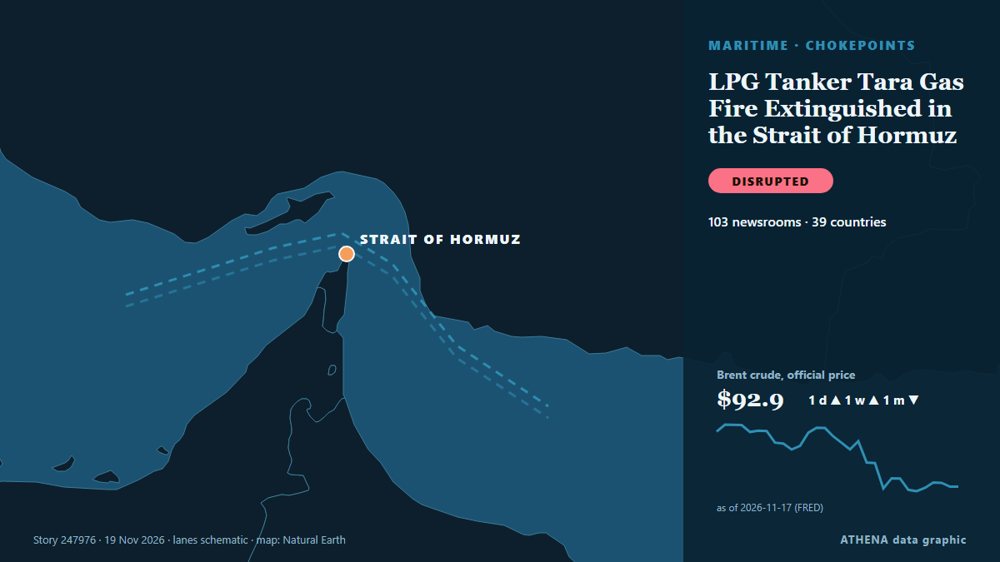

Ναυτιλία & λιμάνια
ΧορηγούμενοΠαρουσιάζεται από  Cybernetics and Artificial Intelligence Lab Welcome to the Cybernetics and Artificial Intelligence Laboratory, established at the Department of Business Administration of the National and Kapodistrian University of Athens. The lab is headed by Professor Dimitrios Thomakos. The lab aims to do research that can be published in top venues. Our research uses tools and methods of Artificial Intelligence, and lies in the following areas: - Forecasting - Decision making - Cyber security - Finance We are always looking forward to collaborating with exceptional students!
Cybernetics and Artificial Intelligence Lab Welcome to the Cybernetics and Artificial Intelligence Laboratory, established at the Department of Business Administration of the National and Kapodistrian University of Athens. The lab is headed by Professor Dimitrios Thomakos. The lab aims to do research that can be published in top venues. Our research uses tools and methods of Artificial Intelligence, and lies in the following areas: - Forecasting - Decision making - Cyber security - Finance We are always looking forward to collaborating with exceptional students!
| 7 Νοε | 0 |
|---|---|
| 8 Νοε | 0 |
| 9 Νοε | 0 |
| 10 Νοε | 0 |
| 11 Νοε | 0 |
| 12 Νοε | 1 |
| 13 Νοε | 0 |
| 14 Νοε | 3 |
| 15 Νοε | 0 |
| 16 Νοε | 6 |
| 17 Νοε | 5 |
| 18 Νοε | 9 |
| 19 Νοε | 0 |
| 20 Νοε | 0 |
Οι τίτλοι των ειδήσεων παρουσιάζονται στα αγγλικά, όπως δημοσιεύτηκαν.

LPG Tanker Tara Gas Fire Extinguished in the Strait of Hormuz
Finally, two days after it was hit in the engine room by an IRGC drone on November 16, the fire on the Panama-flagged LPG tanker Tara Gas (IMO 9290270... από The Maritime Executive
Strike Risk Grows at Busiest US Ports as Contract Talks Stall
Contract negotiations between security workers at the Ports of Los Angeles and Long Beach and their employers have stalled, setting up a “real potential” for a strike starting on Saturday that could… από Insurance Journal
ITF joins ISF Verify to help scale trusted digital seafarer certification worldwide
The International Transport Workers’ Federation has joined the ISF Verify project, to support the roll-out to the ITF’s seafarer network. από Cyprus Shipping News
IMO’s Marine Environment Protection Committee MEPC 85 to discuss shipping emissions, pollution and other ocean issues
The Marine Environment Protection Committee (MEPC) of the International Maritime Organization (IMO) will meet for its 85th session at IMO. από Cyprus Shipping News
VARD and partners receive funding to Advanced Nuclear Propulsion for Ships
The Research Council of Norway has awarded $2 million (NOK 20 million) in initial funding to the Emerald Nuclear Norway-led. από Cyprus Shipping News
Everllence secures first order for methane dual-fuel 8S50ME-GI Mk10.7 engine
Everllence has announced it has won the first order for its methane dual-fuel, two-stroke 8S50ME-GI Mk10.7 engine configuration. από Bunkerspot
Shipping Organizations Urges IMO Agreement on GHG Regulations
Nine major international shipping associations have issued a joint appeal to governments to reach agreement on global greenhouse gas (GHG) regulations, warning that… από Maritime Professional
Maersk and Hapag-Lloyd return three more Gemini services to Suez
Maersk and Hapag-Lloyd will return three additional Gemini Cooperation services to the Red Sea and Suez Canal route on a structural basis. από Container News
Jotun to supply coatings for Knutsen’s LNG carrier series
Norway-based Jotun has been selected to supply marine coatings for a series of nine new LNG carriers for Knutsen. από Bunkerspot
At APC Presidential Rally In Birnin Kebbi, Tinubu Approves Inland Dry Port For Kebbi
• Says it’s strategic towards boosting the state’s economy •Pledges improved security and completion of landmark projects •Former govs Aliero, Bagudu and Dankingari back his re-election Deji Elumoye… από ThisDay (Nigeria)
Yemen ambassador to Kuwait warns of wider regional security risks
KUWAIT CITY, Nov 17: Ambassador of Yemen to Kuwait Dr. από Arab Times
Interview: Hong Kong has key role in keeping global shipping stable, pushing green shift: ICS chairman
The third Hong Kong Global Maritime Trade Summit brought together senior government representatives and maritime industry leaders to discuss the. από Cyprus Shipping News
Egypt Rejects Turkey-Libya Maritime Memorandum at UN
Egypt also disputed maritime boundaries declared unilaterally by Libya and rejected energy cooperation agreements signed by Turkey and Libya. από To Vima (English)
TechnipFMC Keeps DOF's Skandi Africa Subsea Vessel on Contract
DOF Group has secured a new contract from TechnipFMC for its subsea construction vessel Skandi AfricaThe new agreement, valued between $100 million to $200 million… από Offshore Engineer
Oil Tanker Transiting Strait Of Hormuz Attacked Near Oman, 4th In 24 Hours
The Iran Navy said the tanker was travelling in a restricted area with its navigation switched off. από NDTV
Iran's army Navy says fourth tanker hit by mine east of Strait of Hormuz
Iran's Navy said on Monday that a fourth oil tanker, within the past 24 hours, had caught fire after striking a naval mine in what it described as a restricted area east of the Strait of Hormuz… από Deccan Herald
Cyprus Shipping Chamber Announces Inaugural “Global Shipping Minds” Summit
The Cyprus Shipping Chamber (CSC) is pleased to announce the inaugural Global Shipping Minds Summit, which will take place on 27 November 2026 at Park... από The Maritime Executive
Port of Gothenburg eyes large-scale biogas bunkering in 2027
Sweden’s Port of Gothenburg is gearing up to launch a new LBG liquefaction plant next year to enable large-scale liquefied biogas bunkering. από Offshore Energy